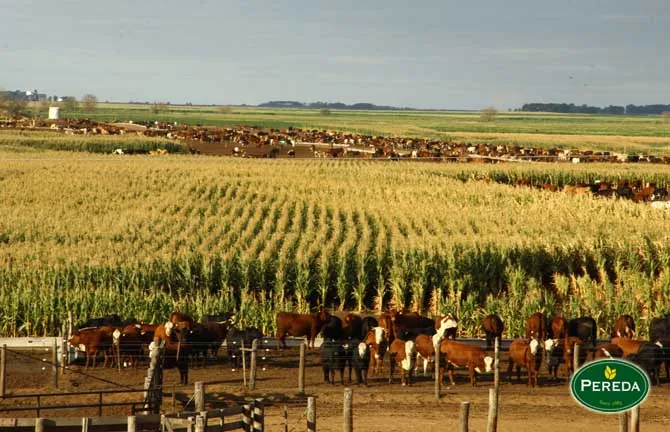

Empresa
Desde 1883.
La familia Pereda conserva su tradición de brindar valor agregado, servicio e innovación a la producción. Pereda Agro S.A. es la nueva generación: más de diez años marcando tendencia en calidad.
01 · Tradición
Más de 100 años en el agro.
Somos una familia empresaria que desde hace más de un siglo se dedica a la producción y comercialización de alimentos agrícola-ganaderos, no solo para la Argentina sino también para los principales mercados del mundo.
02 · Lo que hacemos
Campo, granos y hacienda.
Explotamos campos propios y arrendados donde producimos trigo, cebada, maíz, soja y girasol. Además nos dedicamos a la cría y engorde de hacienda vacuna, alimentada con materia prima de nuestra propia producción.

03 · Tecnología
De la siembra al embolsado.
Aplicamos tecnología de punta desde la producción a campo hasta la limpieza, el clasificado y el embolsado de toda la gama de productos. Y orientamos la gestión hacia una producción sustentable, con rotación de cultivos y uso racional de los recursos.

04 · Calidad
Integrados de punta a punta.
Una de nuestras mayores fortalezas es la integración vertical: aseguramos la calidad del producto en todas sus etapas, desde la producción primaria hasta la entrega en los distintos mercados.

Agregado de valor, producción y servicios
Lo que ofrece Pereda Agro.
Gerenciamiento agrícola
Planificación y manejo de la producción a campo.
Acopio y acondicionamiento
Recepción, limpieza y almacenamiento de granos en planta propia.
Producción y clasificación
Girasol confitero y maíz pisingallo, clasificados por calibre.
Exportación
Del campo argentino a los principales mercados del mundo.
Contacto
¿Querés trabajar con nosotros?
Contanos qué producto, calibre y volumen necesitás y te respondemos a la brevedad.